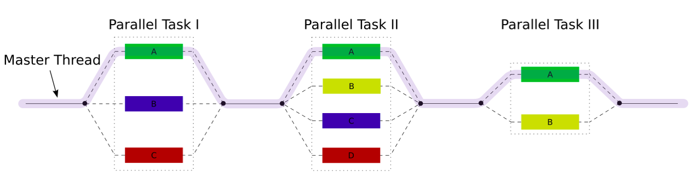

Antes de proceder con el tutorial, en esta sección se explicará lo que es OpenMP, el modelo de ejecución fork-join como base de OpenMP y se realizará un recorrido por algunos de los elementos que componen OpenMP (Directivas de Compilador y Variables de Entorno).
OpenMP es una API (Interfaz de Programación de Aplicaciones) para programación en múltiples procesos y usa memoria compartida como forma de comunicación entre procesos. OpenMP permite añadir concurrencia a programas escritos en los lenguajes de C, C++ y Fortran sobre la base del modelo de ejecución fork-join.
El modelo de ejecución fork-join es un paradigma proveniente de los sistemas Unix, en el cual se tiene una tarea muy pesada que se puede dividir en subtareas independientes más sencillas (fork), para que después de haber resuelto dichas subtareas, al final estos resultados se combinan de alguna forma (join) para obtener la solución a la tarea original.
En términos de implementación, los programas en OpenMP inician con un solo hilo, denominado Hilo Maestro. Cuando se entran a secciones paralelas en la ejecución del programa, se crean cuantos hilos sean necesarios para completar las tareas de estas secciones que se ejecutan simultáneamente por cada hilo; y cuando se salen de secciones paralelas en la ejecución del programa, en una barrera implícita se espera a que todos los hilos terminen sus tareas asignadas, esto permite sincronizar los hilos con el hilo maestro y posteriormente continuar con la ejecución del programa.
Ejemplo 1 (Sumatoria): Se tiene como problema original, realizar el cálculo de una sumatoria de 106 términos a1, a2, a3, ... , a1000000; este problema se puede dividir en 5 subsumatorias independientes más sencillas (fork), cada subsumatoria se puede realizar de forma simultánea. Cuando se hayan resuelto estos 5 subproblemas, para combinar resultados (join), simplemente se toma la suma del resultado de cada subproblema (Usando la propiedad asociativa de la suma de números reales), para obtener la solución al problema original.
Ejemplo 2 (Ordenamiento de un arreglo de números): Se tiene como problema original, realizar el ordenamiento ascendente de un arreglo de 100 números a1, a2, a3, ... , a100; este problema se puede dividir en 5 tareas independientes más sencillas (fork), las tareas consisten en ordenar ascendentemente 5 subarreglos de 20 elementos, cada tarea se puede realizar de forma simultánea. Cuando se hayan resuelto estos 5 subproblemas, para combinar resultados (join), se concatenan estos 5 subarreglos, para obtener un nuevo arreglo y finalmente se ordena ascendentemente este nuevo arreglo para obtener la solución al problema original.
OpenMP usa un conjunto de variables propias que permiten afectar el comportamiento de un programa, estas variables no se pueden manipular directamente, pero como solución, se usan métodos de acceso y modificación para evitar que estas variables se accedan por error. Estos métodos que usa OpenMP son:
omp_set_num_threads: Permite fijar el número máximo de hilos que usará el programa.
omp_get_num_threads: Retorna el número de hilos que están en ejecución en el momento de su llamada.
omp_get_max_threads: Retorna el número máximo de hilos que usará el programa.
omp_get_thread_num: Retorna el número del hilo (Identificador del hilo), este valor es un número entero entre 0 y n - 1, siendo n el número de hilos que usará el programa.
omp_get_num_procs: Retorna el número de núcleos o de procesadores del computador.
También denominadas constructores, una directiva de compilador es una forma de sincronización de un bloque de código que se ejecuta de forma paralela, donde se crean hilos según sea necesario, se permite añadir algunas restricciones en la forma de ejecución de dicho bloque de código, y al final se presenta una barrera para la sincronización de los hilos. Las directivas que usa OpenMP son:
parallel: Indica que el bloque del código puede ser ejecutado por varios hilos. La sintaxis para el uso de esta directiva es la siguiente:
#pragma omp parallel
{
<BLOQUE DE CÓDIGO>
}
for: Esta directiva es igual a la directiva parallel pero está optimizada para el uso de ciclos for. La sintaxis para el uso de esta directiva es la siguiente:
#pragma omp for
for(<INICIALIZACIÓN> ; <CONDICIÓN DE PARADA> ; <ACTUALIZACIÓN>){
<BLOQUE DE CÓDIGO>
}
section y sections: Indica que el bloque de código se puede ejecutar en paralelo, pero por un único hilo. La sintaxis para el uso de esta directiva es la siguiente:
#pragma omp sections
{
#pragma omp section
{
<BLOQUE DE CÓDIGO SECCIÓN 1>
}
...
#pragma omp section
{
<BLOQUE DE CÓDIGO SECCIÓN N>
}
}
single: Indica que el bloque de código solo puede ser ejecutado por un hilo. La sintaxis para el uso de esta directiva es la siguiente:
#pragma omp single
{
<BLOQUE DE CÓDIGO>
}
master: Indica que el bloque de código solo puede ser ejecutado por el hilo maestro. La sintaxis para el uso de esta directiva es la siguiente:
#pragma omp master
{
<BLOQUE DE CÓDIGO>
}
critical: Indica que solo un hilo puede ejecutar el bloque de código. La sintaxis para el uso de esta directiva es la siguiente:
#pragma omp critical
{
<BLOQUE DE CÓDIGO>
}
atomic: Indica que un solo hilo puede ejecutar una sola instrucción que afecta solamente a una variable (Como instrucciones de la forma i++ o i--). La sintaxis para el uso de esta directiva es la siguiente:
#pragma omp atomic <INSTRUCCIÓN DE ACTUALIZACIÓN>
reduction: Hace una operación privada (Suma, resta, multiplicación, división, entre otras) en cada ejecución del bloque de código y al final suma cada resultado. La sintaxis para el uso de esta directiva es la siguiente:
#pragma omp parallel reduction(<SÍMBOLO DE OPERACIÓN> : <VARIABLE>)
{
<BLOQUE DE CÓDIGO>
}
shared: Indica qué variables son compartidas o globales en la región paralela, esto permite que cualquier hilo pueda acceder a alguna de estas variables. La sintaxis para el uso de esta directiva es la siguiente:
#pragma omp parallel shared(<VARIABLE 1>, ... , <VARIABLE N>)
{
<BLOQUE DE CÓDIGO>
}
private: Indica qué variables serán privadas para cada hilo, esto significa que cada hilo tendrá una copia local usada como variable temporal que no se usará fuera de la región paralela. La sintaxis para el uso de esta directiva es la siguiente:
#pragma omp parallel private(<VARIABLE 1>, ... , <VARIABLE N>)
{
<BLOQUE DE CÓDIGO>
}
Es posible especificar que solo se ejecute la región paralela cuando se cumpla una condición dada, para esto, se usa la siguiente sintaxis:
#pragma omp parallel if(<CONDICIÓN>)
{
<BLOQUE DE CÓDIGO>
}